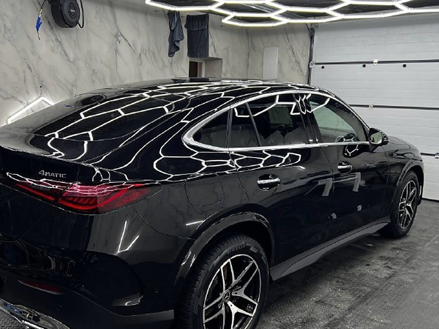

Полная оклейка
Плёнка ложится на все наружные детали. Заводской лак остаётся нетронутым, и через несколько лет машину можно продать без следов пескоструя и мелких сколов.
- Капот, крылья и бампера
- Двери, пороги и крыша
- Полиуретан Spectroll premium, 210 микрон
- Снимается, не повреждая лак
Расчёт по фото